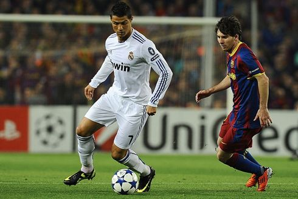

Scoring
He has scored a record 867 senior career goals for club and country. He is one of the few recorded players to have made over 1,100 professional career appearances. Collectively, Ronaldo has won 34 senior trophies in his career.

Dribbling
The Real Madrid legend, with his innate low sense of gravity, mesmeric footwork and ability to change direction, has attempted a staggering 4474 dribbles and completed 2730 - giving him a success rate of 64%.
Assist
Following the former Paris Saint-Germain star is his former Real Madrid teammate and five-time Ballon d'Or winner Cristiano Ronaldo. Ronaldo has provided 268 assists in his career.